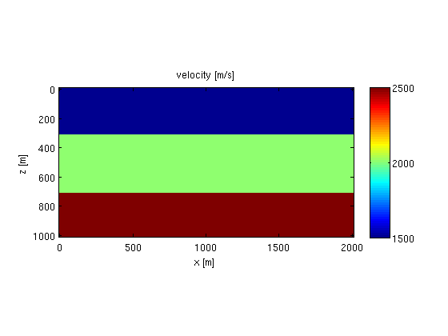
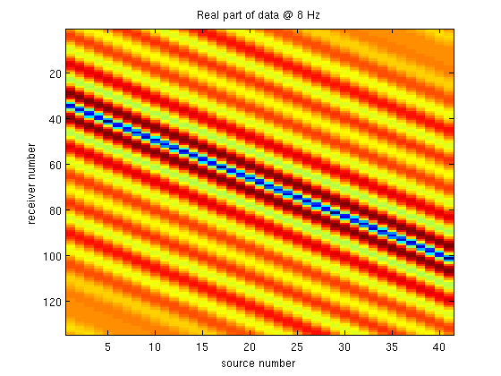
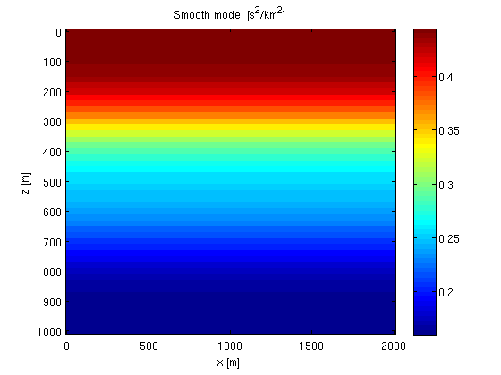
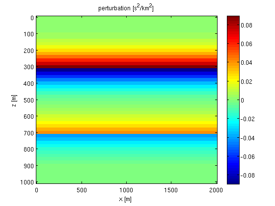
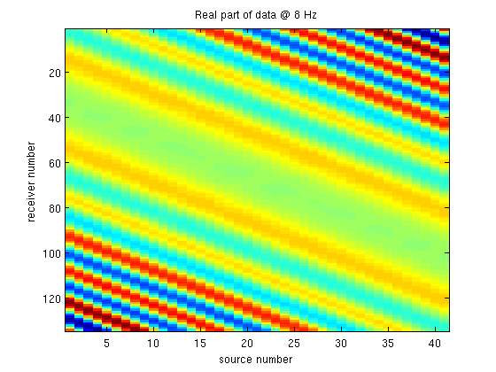

2D constant-density acoustic frequency-domain modeling, linearized modeling and imaging: Modeling
The modeling operator is based on a 9-point mixed-grid discretization of the Helmholtz operator [1]. It solves the system in parallel over frequencies using direct factorization (Matlab's mldivide). Source injection and receiver sampling is done via cubic interpolation. The Jacobian is derived by linearizing the discretized system and its forward and adjoint action is calculated via the adjoint-state method.
The basic syntax of the modeling operator is [D,J] = F(m,Q,model), where
- m is a vector with a gridded slowness-squared model [km^2/s^2],
- Q is a matrix that defines the sources,
- model is a struct with various other parameters,
- D is a vectorized data-cube (receiver x source x frequency),
- J is the Jacobian as SPOT operator.
We illustrate the basic modeling capabilities on a simple layered model.
Contents
Model
We define a simple layered model:
% grid z = 0:20:1000; x = 0:20:2000; % convert to [origin, increment, size] triplet [o,d,n] = grid2odn(z,x); % velocity v = 1500*ones(n); v(z>300,:) = 2000; v(z>700,:) = 2500; % plot figure; imagesc(x,z,v);axis equal tight;colorbar; xlabel('x [m]');ylabel('z [m]');title('velocity [m/s]');
Now, we define a vector with gridded slowness-squared values [km^2/s^2]
m = 1e6./v(:).^2;
Sources/receivers
The sources are defined on a separate grid, which is mapped to the computational grid via adjoint cubic interpolation. A monopole source is then simply defined by putting a single spike on the source grid. For example,
% source grid, 1D grid at z = 15 zsrc = 15; xsrc = 500:25:1500; % point source at z = 15, x = 1225 q = 0*xsrc; q(xsrc==1225) = 1; % define cubic interpolation operator that maps from the model-grid to the % source-grid: L = opKron(opLInterp1D(x,xsrc),opLInterp1D(z,zsrc)); % plot source function on model grid figure; imagesc(x,z,reshape(L'*q(:),n),[-0.01 0.01]);xlim([1200 1300]);ylim([0 50]); colormap([.8 0 0;1 0 0;1 1 1;0 0 1;0 0 .8]); set(gca,'xtick',x,'ytick',z,'xgrid','on','ygrid','on'); hold on;plot(1225,15,'w*'); xlabel('x [m]');ylabel('z [m]');title('monopole source on model-grid');

Each column of the source matrix Q defines one gridded source function. To define a point source on each gridpoint of the source grid, we simply take Q to be an identity matrix:
Q = speye(length(xsrc));
The receivers are defined on a similar grid, and the data is mapped to this grid via cubic interpolation.
Parameters
The struct model contains the following parameters
- model.{o,d,n} - physical grid: z = ox(1) + [0:nx(1)-1]*dx(1), etc.
- model.nb - number of points to add in each direction for absorbing boundary
- model.freq - frequencies in Herz
- model.f0 - peak frequency of Ricker wavelet, 0 for no wavelet.
- model.t0 - phase shift [s] of wavelet.
- model.{zsrc,xsrc} - vectors describing source array
- model.{zrec,xrec} - vectors describing receiver array.
% model grid model.o = o; model.d = d; model.n = n; % absorbing boundary model.nb = [50 50]; % source/receiver grid model.zsrc = zsrc; model.xsrc = xsrc; model.zrec = 5; model.xrec = 0:15:2000; % frequencies in Herz. model.freq = [4:2:15]; % wavelet model.f0 = 10; model.t0 = 0.01;
Data
Having defined al the parameters, we can simply generate data as follows
D = F(m,Q,model,1);
The number of source, receivers and frequencies are given by
nrec = length(model.xrec); nsrc = size(Q,2); nfreq = length(model.freq);
We can now reshape the data into a cube and plot a frequency slice
D = reshape(D,nrec,nsrc,nfreq); figure; imagesc(real(D(:,:,3))); xlabel('source number');ylabel('receiver number');title(['Real part of data @ ' num2str(model.freq(3)) ' Hz']);
Born modeling
We can model linearized data by using the Jacobian. First we define a smoothed model and reflectivity.
% smoothing operator S = opKron(opSmooth(n(2),50),opSmooth(n(1),50)); % smooth model and perturbation m0 = S*m; dm = m - m0; % plot figure; imagesc(x,z,reshape(m0,n));colorbar; xlabel('x [m]');ylabel('z [m]');title('Smooth model [s^2/km^2]'); figure; imagesc(x,z,reshape(dm,n));colorbar; xlabel('x [m]');ylabel('z [m]');title('perturbation [s^2/km^2]'); 
The Jacobian operator is constructed as follows:
J = oppDF(m0,Q,model,1);
Remember, J is not an explicit matrix. It is simply an object that looks like a matrix to matlab. Constructing it does not require any computation. All the computations are done when multiplying it with a vector.
The linearized data is now simply given by
dD = J*dm; dD = reshape(dD,nrec,nsrc,nfreq); % plot figure; imagesc(real(dD(:,:,3))); xlabel('source number');ylabel('receiver number');title(['Real part of data @ ' num2str(model.freq(3)) ' Hz']);
References
[1] C-H Jo,* C. Shin,* and J.H. Suh, 1996. An optimal 9-point, finite-difference, frequency-space, 2-D scalar wave extrapolator Geophysics 61(2), 529-537.